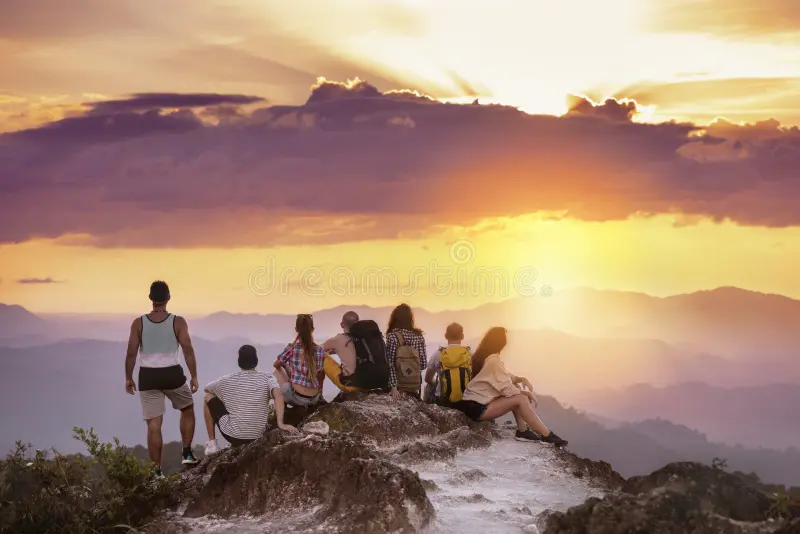

Friends United by Adventure: Welcome to Our World!
Hi there and thanks for stopping by! We're a group of inseparable friends, but what truly binds us is a common, unstoppable passion: to explore. This blog is the faithful journal of our backpacking adventures, born from a simple truth: life is too short to stand still. We've been traveling together for years, turning planning into chaotic yet fun brainstorming sessions. Our style is purely adventure-driven: we prefer the road less traveled, rely on instinct (and sometimes questionable maps), and find joy in budget-friendly exploration. Whether it's hiking a peak at dawn or happily getting lost in a night market, we always do it together, because laughter is the best travel currency. Here, we share our honest and dynamic perspective. We want to inspire you to overcome travel anxieties, view unexpected detours as opportunities, and discover the joy of exploring the world alongside the people you love. Join us and find out how we turn every destination into an unforgettable adventure. Our only rule is: never stop seeking the next horizon!
Torna alla home